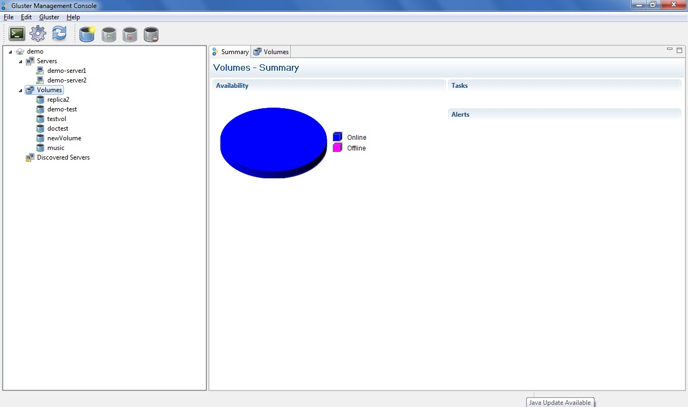

A volume is a logical collection of bricks where each brick is an export directory on a server in the trusted storage pool. Most of the Gluster management operations happen on the volume. The volume is the designated unit of administration in GlusterFS, so managing them is a large part of the administrator's duties. This section explains how to manage the volumes stored on file server machines.
You can use Volumes to do the following:
The console also enables you to monitor the volumes in your cluster from the Summary tab. To display the summary of your volumes, click the Volume node from the left pane of the console window. The summary of the volumes is displayed in the right pane of the console window. It also displays Tasks and Alerts of all the volumes.
